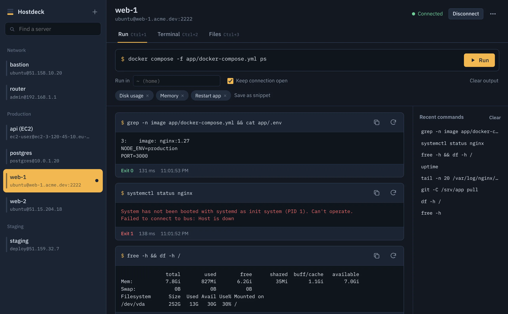
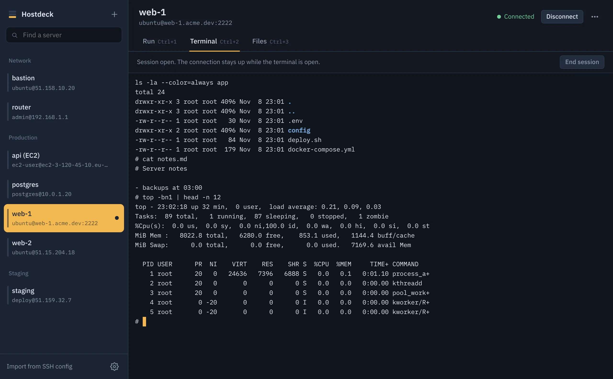
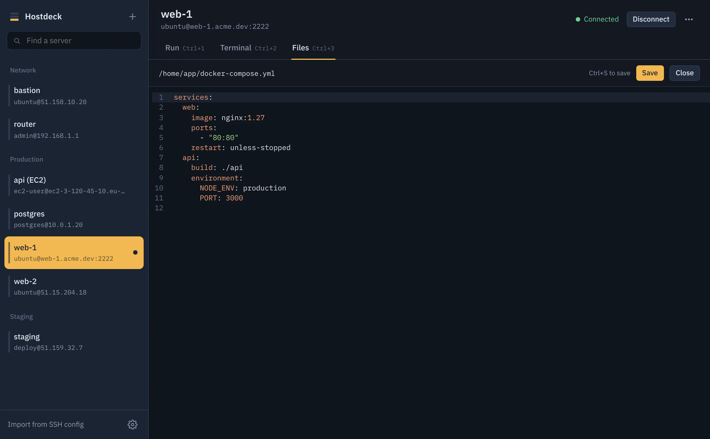

Hostdeck documentation
Hostdeck keeps a list of the servers you reach over SSH and lets you run commands, open a terminal, and work with files on them. It runs on Linux, Windows and macOS, and everything it stores stays on your computer.
Install
Download the file for your system from the latest release.
Linux
AppImage (any distribution): make it executable, then run it.
chmod +x Hostdeck-*.AppImage ./Hostdeck-*.AppImage
On Ubuntu 22.04 and later, AppImages need FUSE 2. If it does not start, install it with sudo apt install libfuse2t64 (Ubuntu 24.04) or sudo apt install libfuse2 (22.04).
Debian / Ubuntu package:
sudo apt install ./Hostdeck-*.deb
To save passwords securely, Hostdeck uses your desktop's secret service (GNOME Keyring or KWallet). Most desktops have one running already. See Your data and security for what happens without one.
Windows
Run the installer, or use the portable .exe if you prefer not to install anything. Because the app is not code-signed yet, Windows SmartScreen may show “Windows protected your PC”. Choose More info, then Run anyway.
macOS
Open the .dmg and drag Hostdeck into Applications. The app works on Apple silicon and Intel Macs. It is not notarized yet, so the first time, Control-click the app and choose Open, then confirm. If macOS still refuses, go to System Settings → Privacy & Security and choose Open Anyway, or run:
xattr -dr com.apple.quarantine /Applications/Hostdeck.app
Quick start
- Click Add server. Enter the address (for example
51.15.204.18orserver.example.com), the username (oftenubuntu,ec2-user,debianorroot) and how you sign in. - Choose Save and connect. The first time, Hostdeck shows the server's fingerprint and asks you to trust it.
- In the Run tab, type a command such as
df -hand press Ctrl+Enter (⌘+Enter on a Mac).
That's it. Next time, pick the server from the list and run.

Add a server
Click + at the top of the server list, or press Ctrl+N. To change a server later, right-click it (or use the ⋯ button next to its name) and choose Edit.
| Field | What it does |
|---|---|
| Name | How the server appears in the list. Defaults to the host. |
| Group | Optional. Servers with the same group are listed together, such as Production and Staging. |
| Host and Port | IP address or hostname, and the SSH port (usually 22). |
| Username | The account to sign in as. |
| Sign in with | Password, private key, SSH agent or 2FA prompts. See Sign-in methods. |
Under More options:
| Jump host | Connect through another saved server. See Jump hosts. |
| Start folder | Where the file browser opens and where new terminals start, for example /var/www. |
| Keepalive | Seconds between keepalive messages so idle connections are not dropped by firewalls. Default 30, 0 turns it off. |
| Color | A colored tab in the server list, handy for marking production. |
| Notes | Anything you want to remember about the server. |
| Allow legacy algorithms | Enables older key exchange, ciphers and host key types for old servers and network devices. Leave it off unless a connection fails with a “no matching algorithm” error. |
Changing the address, username or sign-in details of a connected server closes its connection, so the next action uses the new settings.
Sign-in methods
Password
Type the password and Hostdeck saves it encrypted with your system keychain. If you would rather not store it, tick Ask for the password every time; it is then used for that connection only.
Private key
Choose a key file with Browse, for example ~/.ssh/id_ed25519 or the .pem file AWS gave you for an EC2 instance. Only the path is saved; the key stays where it is. You can also open Paste a key instead and paste the key text, which is then stored encrypted.
OpenSSH, PEM (RSA, ECDSA) and Ed25519 keys work. If the key has a passphrase, save it in the form or leave it empty to be asked when you connect. PuTTY .ppk files need converting first with PuTTYgen (Conversions → Export OpenSSH key).
SSH agent
Uses the keys already loaded in your SSH agent, so Hostdeck never sees them.
- macOS and Linux: the agent in
SSH_AUTH_SOCK. Add a key withssh-add ~/.ssh/id_ed25519. - Windows: the built-in OpenSSH agent. Start the “OpenSSH Authentication Agent” service, then run
ssh-add. To use Pageant instead, set the agent path topageantin Settings.
Tick Forward the agent if you need your keys on the server, for example to git pull from a private repository. Only forward to servers you trust.
2FA and prompts
For servers that ask questions during sign-in, such as a password followed by a one-time code. Hostdeck shows each question as the server asks it. Password servers that use this style of prompt work with the Password method too; Hostdeck answers the password question for you.
Jump hosts
Private machines, such as a database on 10.0.1.20, are often reachable only through a bastion server. Save the bastion as its own server, then on the private server open More options and pick the bastion as Jump host. Hostdeck connects to the bastion first and tunnels through it, like OpenSSH's ProxyJump. The bastion can have its own jump host, up to five hops.
Host keys
Every SSH server has a key that proves it is the machine you think it is. The first time you connect, Hostdeck shows its fingerprint:
- Trust and connect remembers the key.
- Connect once connects without remembering, so you will be asked again next time.
- Cancel stops the connection.
To check the fingerprint, run this on the server, or look at your cloud provider's console output:
ssh-keygen -lf /etc/ssh/ssh_host_ed25519_key.pub
If a server's key changes, Hostdeck stops and shows both fingerprints. That is expected after reinstalling a server or reusing an IP address for a new machine. If you did not expect it, cancel: someone could be intercepting the connection.
Trusted keys are listed in Settings, where you can forget one.
Import from SSH config
If you already use ssh in a terminal, choose Import from SSH config at the bottom of the server list. Hostdeck reads ~/.ssh/config, lists every host, and marks ones you have already added. It picks up HostName, User, Port, IdentityFile and ProxyJump, following the same “first value wins” rules as OpenSSH, including defaults from Host *.
Hosts with a key file are set to Private key; the others use the SSH agent. Match blocks and Include lines are skipped, and only the first hop of a multi-hop ProxyJump is linked.
Run commands
Select a server, type a command and press Run or Ctrl+Enter. Commands can span several lines and use pipes, && and anything else your shell understands. Each result shows:
- the output as it arrives, with error output in red
- the exit code (0 means success), how long it took and when it ran
- buttons to copy the output or run the command again
Stop interrupts a running command. Output over 2 MB per command is cut off; redirect large output to a file instead.
Keep connection open
By default, if a server was not connected when you pressed Run, Hostdeck connects, runs the command and disconnects. Tick Keep connection open to stay connected, which makes the following commands start instantly. A connection also stays open while a terminal or file editor is open on that server. You can make this the default in Settings, and disconnect any time with the button at the top.
Working folder, history and snippets
- Run in sets the folder the command runs in, for example
/srv/app. Empty means your home folder (or the server's start folder). - Recent commands on the right lists the last commands for this server. Click one to load it, double-click to run it. Press ↑ in an empty command box for the last one.
- Snippets are saved commands available on every server. Type a command, choose Save as snippet and give it a name.
Commands that look destructive, such as rm -rf /, mkfs, writing to a disk device, or reboot and shutdown, ask for confirmation first. You can turn this off in Settings.
Each Run starts a fresh shell, so cd or exported variables do not carry over to the next Run. Use Run in, chain commands with &&, or open the Terminal for a session that remembers state.
Terminal
The Terminal tab opens a full interactive shell, the same as ssh user@host. Use it for editors like vim and nano, htop, database prompts, or scripts that ask questions. It resizes with the window and keeps 5,000 lines of scrollback.
Copy with Ctrl+Shift+C and paste with Ctrl+Shift+V (⌘+C / ⌘+V work on a Mac). Typing exit or choosing End session closes the shell; Start new session opens another. Switching to another server or tab keeps the terminal running in the background.

Files and editing
The Files tab browses the server over SFTP, starting in your home folder or the server's start folder. Double-click a folder to open it, use the up arrow for the parent folder, or type a path in the bar and press Enter.
Upload and download
- Upload → Upload files or Upload folder, or drag files and folders from your desktop onto the list. They go into the folder you are viewing.
- To download, open a file's ⋯ menu (or right-click it) and choose Download. Folders download with everything inside.
- A progress bar at the bottom shows large transfers.
Edit a file
Double-click a text file to open it in the editor. It highlights shell scripts, YAML, JSON, nginx configs, .env files, Dockerfiles, Python, JavaScript, SQL and more. Press Ctrl+S to save and Ctrl+F to search.
- Saving writes to a temporary file and swaps it into place, so a dropped connection never leaves a half-written file. This works on OpenSSH servers, which is nearly all of them; on others Hostdeck writes the file directly. The file keeps its permissions.
- If the file changed on the server after you opened it, Hostdeck asks before overwriting the other change.
- Files up to 5 MB open in the editor. Larger files and binary files can be downloaded instead.
- New → New file creates an empty file and opens it.
The editor saves as the user you signed in as. Files owned by root, such as most of /etc, cannot be saved unless you sign in as root. Use the Terminal with sudo nano or sudoedit for those.
Other actions
The ⋯ menu on each item also has Rename (type a full path to move it), Permissions (an octal mode like 644 or 755), Copy path and Delete. Deleting a folder removes everything in it and cannot be undone.

Keyboard shortcuts
On a Mac, use ⌘ wherever this table says Ctrl.
| Shortcut | Action |
|---|---|
| Ctrl+N | Add a server |
| Ctrl+K | Find a server |
| Ctrl+1 / 2 / 3 | Run, Terminal, Files tab |
| Ctrl+Enter | Run the command |
| ↑ in an empty command box | Load the last command |
| Ctrl+S | Save the file in the editor |
| Ctrl+F | Search in the editor |
| Ctrl+Shift+C / V | Copy / paste in the terminal |
| Ctrl+, | Settings |
| Double-click a server | Connect |
| Esc | Close a dialog or menu |
Your data and security
Hostdeck has no account and no server of its own. It connects only to the machines you add and sends nothing anywhere else: no analytics, no crash reports, no update checks.
Your servers, snippets, command history, trusted host keys and settings are stored in one file, readable only by your user:
| Linux | ~/.config/Hostdeck/hostdeck.json |
| macOS | ~/Library/Application Support/Hostdeck/hostdeck.json |
| Windows | %APPDATA%\Hostdeck\hostdeck.json |
Settings → Show data folder opens it.
How secrets are protected
Saved passwords, pasted private keys and passphrases are encrypted before they are written, using the macOS Keychain, Windows DPAPI, or the Linux secret service (GNOME Keyring or KWallet). Key files you choose with Browse are never copied; only their path is saved. Settings shows which secret storage is in use.
On Linux without a keyring, saved passwords can only be lightly obscured, and Hostdeck warns you in the server form. On those systems, prefer an SSH key, the SSH agent, or “Ask for the password every time”.
Moving to another computer
Settings → Export servers saves your servers and snippets to a JSON file. Passwords and keys are never included. On the other computer, use Import servers, then re-enter passwords or point to your key files.
Inside the app
For those curious: the window runs with Electron's context isolation and sandbox, a strict content security policy and no navigation away from the app. All SSH work happens in the main process using the ssh2 library, and the window can only reach it through a short list of actions.
Settings
Open Settings with the gear at the bottom of the server list or Ctrl+,.
- Theme: match the system, dark or light.
- Keep connections open after running a command: the default for the Run tab's checkbox.
- Ask before running commands that look destructive: on by default.
- SSH agent path: a custom agent socket, a Windows named pipe, or
pageant. - Trusted host keys: every remembered fingerprint, with Forget.
- Your data: where the file is, which secret storage is used, and export or import of servers.
Troubleshooting
“Authentication failed”
- Check the username. Cloud images use
ubuntu(Ubuntu),ec2-user(Amazon Linux),adminordebian(Debian), orroot(many Scaleway images). - For a key, make sure it is the one the server knows, for example the key pair chosen when the EC2 instance was created.
- Many servers disable password sign-in. If
sshin a terminal only works with a key, use a key here too.
“Connection refused” or “Timed out”
The server is not listening on that port, or a firewall blocks you. Check the port, and that the server's firewall or cloud security group (AWS security groups, Scaleway security groups) allows SSH from your IP address. Hostdeck gives up after 20 seconds without an answer; time spent answering prompts does not count.
“No matching algorithm” or handshake failed
The server only supports old algorithms. Edit the server, open More options and tick Allow legacy algorithms.
“No SSH agent found”
Start your agent and add a key. On Linux and macOS: eval "$(ssh-agent)" then ssh-add. On Windows, start the “OpenSSH Authentication Agent” service in Services, or set the agent path to pageant if you use Pageant.
The host key changed
See Host keys. If you rebuilt the server, choose Trust new key.
Cannot save a file
You are probably editing a file your user cannot write, such as one in /etc. Use the Terminal with sudo, or adjust the file's owner or permissions.
Still stuck?
Open an issue on GitHub with your operating system, the Hostdeck version (shown in Settings) and the exact error message. Never paste passwords or private keys.
Build from source
You need Node.js 20 or later.
git clone https://github.com/ramiatoui/hostdeck.git cd hostdeck npm install npm start # run the app npm test # run the tests against a built-in SSH test server npm run dist:linux # or dist:win, dist:mac
Installers are written to release/. Running the Release workflow from the repository's Actions tab, or pushing a tag such as v0.1.0, builds Linux, Windows and macOS installers on GitHub Actions and publishes them as a release.